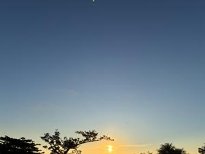
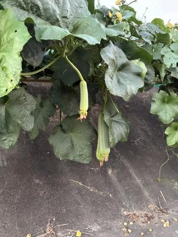

うるがいの話 ある日
最新: ヘチマ【うるがいの話 ある日】とは 一日だけのプログです
『うるがいの話』の最新一日だけのプログで、通信料が少なく経済的だ。カニの画像をクリックすると全ての日付が載る『うるがいの話』サイトを表示します
|
|
【うるがいの話】 うるがい(ｳﾙｶﾞｲ urugai)とは、『もずくがに』の名前でとても大きくなります。 |
|---|---|
|
|
【カミマヤーの話】 猫のことを方言でマヤーといいます。カミマヤー（kamimayaa）とは、神の猫のことです。 |
|
【たながぁの音楽】 たながぁ（ﾀﾅｶﾞｰ tanagaa）とは手長えびのことで、何種類かあり大きいのは車 エビぐらいになります。 |

|
【ぶながぁの話】 ぶながぁ(ﾌﾞﾅｶﾞｰ bunagaa)とは、赤い髪の毛、赤い身体、そして身長は１ｍ２０ｃｍ ぐらい、川の蟹を食べているの目撃された。場所は沖縄県国頭郡大宜味村のと ある村僕の隣近所に住んでいる爺さんから、聞いた話です。 |
|
|
【ギーマの話】 ギーマ(giima)とは、山原の里山に咲くスズランに似た、 花を付けます。実は食べられます、 気が付くと口の周りが紫になっています。 |
2026年10月17日 (土）ヘチマ
15:24

ジョギングコース、道沿いに叔父さんがヘチマを植えました。
あれよあれよと、蔓が伸び、花が咲き、実がなりました。食べ
ごろです。

でも、ウリ系の家庭栽培は遠慮してくださいって言われている
が。ま、叔父さんだからネ、うちはゴーヤやヘチマは当面栽培
しなことにしてます。
【セグロウリミバエの緊急防除への協力依頼】
【2026.9.28時点情報】
第２回 北部市町村一斉定期果実調査の結果恩納村内調査地点
２８か所のうち６か所でセグロウリミバエ寄生が確認されまし
た。
家庭菜園での栽培自粛、防除の徹底（農薬散布、ネット、袋が
けなど）、適正処分（不要果実の密閉処理又は２０ｃｍ以上深
さへの埋設処理）をお願いします。
ソースネクストから、メールが昨日届きました。でも、混雑し
てパスワード変更できませんでしたが、先ほど変更しました。